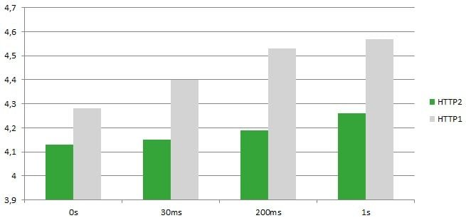
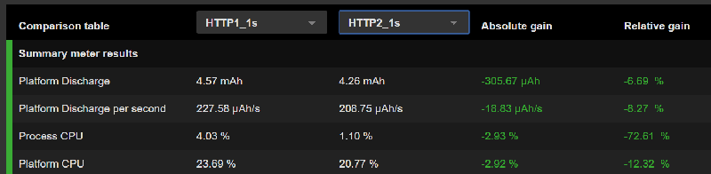

The HTTP 1.1 protocol has been set nearly 20 years ago. With this text-based protocol, the main drawback in terms of performance and efficiency is the latency…
Each time an asset is required by the web page (such as images, JavaScript function…), a TCP connection is initiated with the server, with some latency depending on the network (which is a function of many parameters, including the distance between the user and the web server). This is reinforced by the fact that browsers cap the number of simultaneous connections, usually to a max number of 5. The HTTP2 protocol – released in mid 2015 – comes with a major improvement to this latency problem. How? By streaming and multiplexing binary frames instead of managing text assets. There is now only one TCP connection, and downloads are parallelized. As a result, we get rid of the overhead from TLS negotiations.
It’s’ clear now that HTTP2 improves the performance of websites and web applications. But what about energy efficiency ? Because better performance doesn’t always mean better efficiency. That’s what I wanted to quick-check. Let’s do it.
With @Golang we can easily set up a HTTP2 server. A public demonstrator allows to test the implementation and the performance. For this purpose, an image composed of 180 tiles can be viewed with several different latency parameters:
I measured the energy consumption required to display this web page on a Nexus 6 smartphone. Here are the results I got:

We see that for the same latency values (0s, 30ms, 200ms, 1s) that HTTP2 is more energy efficient, with approximately 8 % less energy consumption.

This screenshot from GREENSPECTOR shows the differences between the “1s latency” scenarios, both with HTTP1 and HTTP2. Note the relative gain of 8.3% for the Platform Discharge per Second.
Moreover, when the latency increases, HTTP2 permit to «absorb » more of the performance loss:
• For HTTP2 : 4,13 mAh to 4,26 mAh (+3%) when the latency goes from 0s to 1s
• For HTTP1 : 4,28 mAh to 4,57 mAh (+6%) when the latency goes from 0s to 1s
Conclusion
Yes, HTTP2 can improve the client-side power efficiency of a website. As a website owner, that’s something you want to do in order to save your users’ battery life. But there’s more in it. As HTTP2 groups the requests, the server is loaded during a shorter period: hence server resources are released earlier and ready for other users.
Let’s finish by a warning on this use case: this was only a quick check, we’re not on a « real case » with different assets, several CDN… So this study is to be continued, but HTTP2 shows nice promises for energy efficiency.